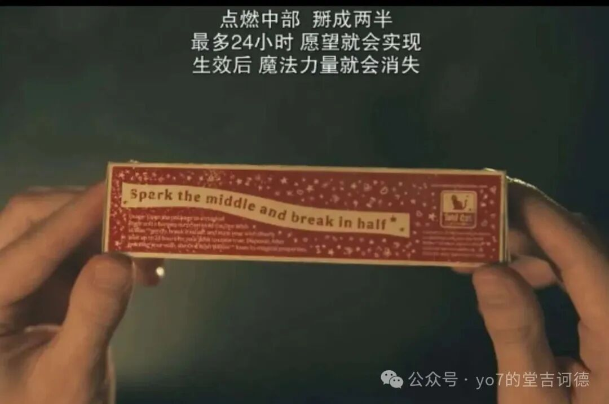
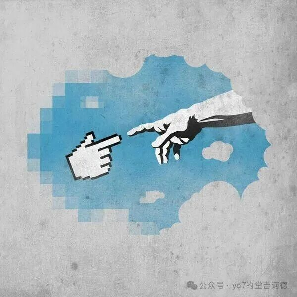
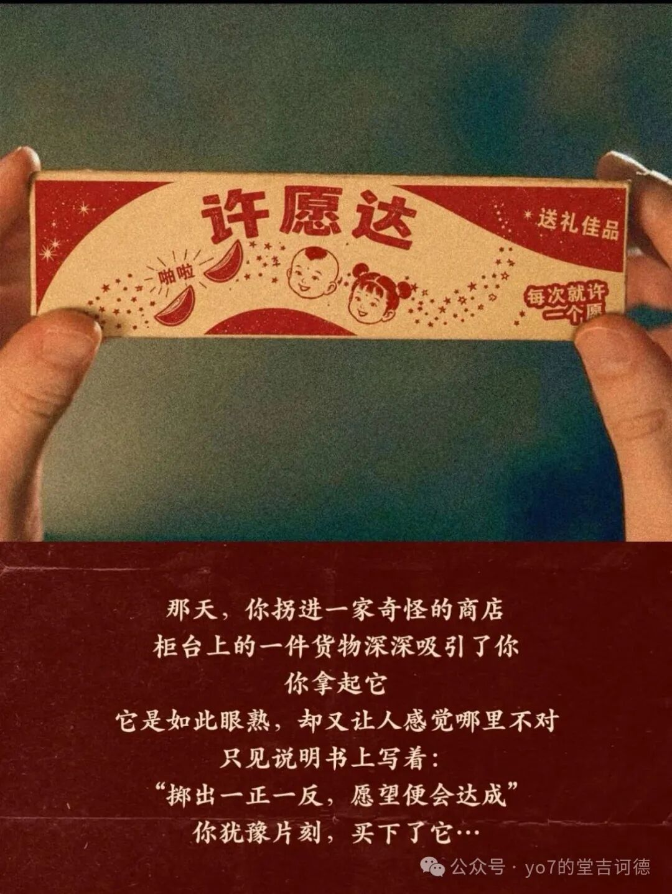
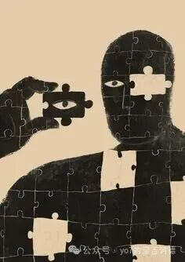
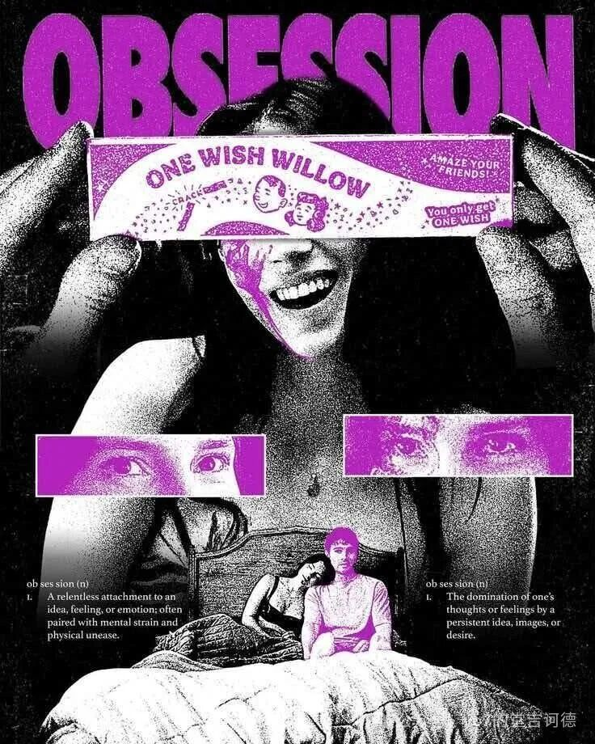

看完《痴迷》以后，很多人说我们真正害怕的，就是“爱”本身，害怕“爱”会让自己失去自由。（本文不过多评价这个社会问题，而是来讨论一下许愿这个东西）
我发现男主犯了一个非常典型的错误。
他把一句自己都没有想明白的话，交给了一个能力远超自己、又不提供售后服务的系统。
男主希望妮基爱上自己。“许愿柳”收到请求以后，没有追问，没有确认，也没有弹出用户协议。
它只是执行。而且执行得非常认真。

妮基果然越来越爱他。爱得热烈，爱得坚定，爱到她原来的生活开始被这份感情吞没，爱到一部感情片逐渐拥有了伪人的气质。
在看电影的时候就很多问题：是不是男主的愿望写得不够严谨？毕竟他的原始需求只有一句：让她爱我。
没有定义“爱”，没有规定副作用，没有说明持续时间，也没有写清楚出现人格异常以后能不能回滚。就这么一句，他交给了一个来历不明、权限极高的超自然系统。
当然，后来事实证明，“许愿柳”并没有随便看着办。它准确地完成了任务。准确得像在报复需求方。
于是我决定认真研究一下：
假如世界上真的存在许愿，我们怎样才能许出一个绝对安全、毫无副作用的愿望？
研究刚开始时，我认为这主要是一个语言问题。
研究结束时，我发现语言甚至不是最大的问题。
最大的问题可能是——我们根本没有自己想象中那么了解自己的愿望。
01
愿望不是一句话，而是从挑选未来结果
我们先将每一种未来装进一个集合里。你升职是一种未来。你没有升职是一种未来。你突然暴富，也是一种未来。你暴富以后发现十八位多年没有联系的亲戚同时恢复了对你的记忆，又是另一种未来。
当你说出一个愿望时，其实并没有唯一指定某个结果。你只是从所有未来里圈出一片区域。那么所有满足“你变得富有”的未来，都被圈了进来。
其中可能包括：你创业成功；你中了大奖；你继承了遗产；全世界货币突然贬值，早餐价格变成三亿元，而你账户里刚好有四亿元；其他人全部失去财富，因此你凭借二百元成为世界首富。
从字面上看，这些方案都完成了任务。
许愿真正可怕的地方，就在这里：
你以为自己指定了答案，实际上只指定了验收条件。
至于系统通过什么方式验收，你没有决定。在生活中，我们不太担心这个问题。因为现实执行能力有限。
你说“我想发财”，现实不会立刻把世界金融系统炸掉，只为让你在财富排行榜上上升一名。现实通常会说：好的，建议先投简历。
但魔法不同。
魔法拥有一种现实中极少见的品质：执行力太强。
它不会替你理解“你真正想要什么”，只会尝试满足“你明确要求了什么”。
许愿故事中的魔鬼，也未必需要故意曲解你。
它只需要从所有符合字面条件的未来里，挑一个最差的。
02
人真正想要的，往往不是结果，而是结果附带的证明
假设一个学生许愿：希望我这次考试获得第一名。
愿望实现了。
第二天，他查看成绩，发现自己确实排名第一。
但具体实现方案是：考试系统删除了其他考生的成绩。
这个愿望算成功吗？
从排名角度看，当然成功。他不仅是第一名，而且和第二名之间存在无限大的领先优势，因为第二名根本不存在。
但他大概不会因此获得多少自信。
因为他想要“第一名”，真正想得到的可能不是排行榜上的一个位置，而是第一名所证明的东西：我掌握了知识。我的努力有效。我的能力得到了验证。
如果排名来自系统修改，结果还在，证明却失效了。
类似情况其实很多。
人说想要钱，可能真正想要的是安全感、选择权或者被尊重。
人说想要出名，可能真正想要的是确认自己并非无足轻重。
人说想要成功，可能真正想证明过去的痛苦没有白费。
我们以为目标是某个结果：
但真正需要的，往往是由产生结果的过程所提供的意义：
如果魔法绕过过程 ，直接交付结果 ，我们就会发现：
结果确实到了。
但它不再能够说明我们原本想让它说明的事情。
这也是《痴迷》中的愿望为何必然令人不安。
男主想得到的不只是“妮基爱他”这个状态。
他还希望这份感情证明：他值得被选择。
可一旦选择是由魔法保证的，它就不再能够证明任何东西。
03
如果可以跳过全部过程，人生还剩下什么？
许愿的核心诱惑，是跳过过程。
不必学习，直接拥有知识。不必工作，直接获得财富。
不必相处，直接获得感情。不必经历失败，直接抵达成功。
这听起来十分高效。
而人类社会现在最喜欢的，恰好就是高效。
我们希望快速入门，快速成长，快速变现，最好连人生意义也能通过三个步骤掌握。
但某些东西一旦跳过过程，结果就会改变性质。
假如你许愿获得博士学位。第二天，一张真实有效的学位证出现在桌上，学校系统里也有记录。你确实拥有博士学位。
但你博士了吗？
这听起来像一句语法有问题的话，却准确指出了某种区别：
“拥有一个结果”和“成为能够产生这个结果的人”，不是同一件事。
许多愿望的目标是名词：财富、名誉、爱情、成功、智慧。
但人生实际以动词的方式发生：学习、尝试、理解、选择、承担。
许愿试图用一个名词替换一整组动词。而很多意义，恰好藏在那些被替换掉的动词中。
勇敢不是没有恐惧的结果。勇敢是一个人在恐惧存在时仍然行动。
信任不是确定对方永远不会伤害自己。信任是在无法获得绝对确定时，仍然愿意开放一部分自己。
选择也不是得到最优结果。选择意味着在信息不足的情况下决定，并接受那些没有被选择的人生不会发生。
如果魔法提前消除了所有风险，勇敢、信任和选择也可能随之消失。
我们得到了一个无比顺利的人生。
唯一的问题是，那个生活在其中的人，似乎没有真正做过什么。
04
愿望最危险的状态，是欲望和执行力之间不再有距离
人的欲望通常没有我们想象中那么文明。
我们会嫉妒，会后悔，会希望某个人付出代价，会在深夜短暂地想让整个世界按照自己的情绪重新排列。
多数时候，这些念头没有造成严重后果。并不一定是因为我们道德水平极高。
也可能是因为现实执行效率很低。
你愤怒地希望对方立刻后悔。现实表示已收到，预计不会处理。这种阻力非常重要。它在欲望和结果之间加入了时间、成本、他人意志和法律制度。人在执行愿望之前，可能冷静下来。
可能发现自己不再想要。也可能在行动过程中意识到后果。
现实的麻烦，恰好构成了某种保护。
《痴迷》真正恐怖的地方，不只是男主提出了一个错误愿望。而是这个愿望获得了几乎无限的执行能力。
普通人的短暂冲动，突然拥有改写另一个人乃至整个现实的权限。
这时问题便不再是：男主是不是坏人？
一个人不必特别邪恶，也可能因为认知有限而制造灾难。
他只需要同时满足两个条件：
不完全理解自己的目标； 拥有足够强的执行力。
这也是为什么许愿故事在今天显得格外熟悉。
现代技术不断缩短欲望与结果之间的距离。
想买东西，几秒完成付款。想获得关注，立即发布内容。想生成图像、文章、代码，输入一句话即可得到。
能力本身不是诅咒。
真正的问题是：
当执行系统越来越强，人类对自身意图的理解是否同步提高了？
如果没有，世界就会出现越来越多“完全按照要求完成，却不是我们真正想要的结果”。
就像ai一样，未来最危险的系统，未必是拒绝服从人类的系统。

它可能极其服从。
只是服从了人类说出口的目标，而没有理解人类来不及说出口、甚至自己都不知道该如何表达的部分。
05
如果世界真的给你一次许愿机会，应该许什么？
经过以上研究，我原本打算给出一条绝对安全的愿望模板。
比如：
请在不伤害任何主体、不改变任何人的人格与自主选择、不制造不可逆后果，并经过充分验证的情况下，以对现实最小的必要改变，实现……
写到这里，我发现这条愿望已经失去了愿望应有的气质。它更像一份风险评估报告。而且即使如此，仍然无法保证绝对安全。因为你不可能提前知道所有风险。无法描述一个尚未被你想象出来的副作用。也无法确保未来的自己仍然同意现在的愿望。

愿望有一个很少被讨论的伦理问题：
现在的我，有多大权力替未来的我作出永久决定？
人的偏好会变化。
一个不可撤销的愿望，相当于让今天的自己获得对未来所有版本自己的独裁权。这和替别人决定人生，有某种相似之处。
只是那个别人，恰好是多年后的你。
因此，如果真有一次许愿机会，最安全的愿望可能不是获得某个结果。
而是获得一种能力：
让我更准确地理解自己的欲望，更充分地认识它可能造成的后果，并保留重新选择的能力。
听起来非常不划算。别人许愿获得财富、力量和长生不老。
你千辛万苦找到神灯，最后许愿提高了决策素养。
像是打开一个传说级宝箱，获得了一门通识选修课。
但这或许是少数不会立即摧毁许愿条件本身的愿望。
它没有要求世界替你活。
只是让你更有能力参与自己的人生。
06
我们为什么仍然需要愿望？
说到这里，许愿似乎已经被分析成一种高风险行为。但人不会因此停止许愿。
我们仍会在生日时闭上眼睛。会在新年给自己设定目标。会在最困难的时候想象另一个可能的未来。
因为愿望并不只是对现实的命令。
它还是一种暴露。
它暴露我们缺少什么，害怕什么，在乎什么。
一个人许愿获得财富，可能是在暴露对失控生活的恐惧。
一个人许愿回到过去，可能不是因为过去真的完美，而是还没有原谅当时的自己。
一个人许愿让所有人认可自己，可能是因为他还没有建立不依赖所有人认可的自我价值。
愿望值得保留。但它更适合作为一个问题，而不是一条命令。
不是世界必须替我实现什么？
而是为什么我如此渴望它？如果它真的实现，我希望从中得到什么？有没有某些东西，必须通过生活本身才能获得？
愿望如果被立即执行，可能成为诅咒。
愿望如果被认真理解，反而可能成为认识自己的入口。

结语
我最初以为，许愿故事是在提醒人不要贪心。
后来才发现，它们真正警惕的，可能不是欲望太多。
而是欲望太快获得权力。
人只能看见眼前缺少的东西，却希望整个未来为此重新排列。
我们想要答案，却没有想清楚问题。
想要结果，却经常忘记结果为什么重要。
想要消灭遗憾，却没有意识到遗憾可能来自真正做过选择。
想要世界完全按照自己的意愿运行，却没有意识到，一个完全服从我们的世界，最终可能只剩下我们自己。
《痴迷》里的男主认为，只要愿望实现，人生就会抵达正确的位置。但愿望真正交付结果后，他才发现想要的，从来不是孤立的结果。而是一整套让结果具有意义的条件。

我们想要成功，也想确认自己有能力成功。想要被爱，也想让这份爱来自一个自由的人。想要幸福，却不想以失去感受其他一切的能力为代价。
而魔法最擅长的，恰恰是只交付结果。
它听见你说：我想要一个完美人生。于是删除了失败、风险、变化、偶然和他人的拒绝。最后，一个毫无缺陷的未来被送到你面前。它非常平稳，非常安全，一切都符合要求。只是看起来，已经不太像人生了。
所以愿望最大的漏洞，也许从来不在语言里。它在许愿的人身上。我们一边对世界说“请按我的想法执行”，一边甚至还没有完成那个最基本的步骤：想明白。